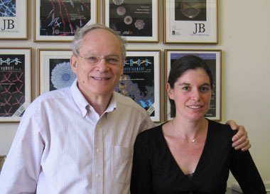

News Archives : 2010 : A Small Molecule Trigger for Biofilm Disassembly
by Richard Losick
May 7, 2010
A three-way collaboration between the laboratories of Rich Losick in MCB and Roberto Kolter and Jon Clardy at Harvard Medical School has led to the discovery of a natural and potent factor that prevents biofilm formation, as reported in the April 30th issue of Science magazine. Biofilms are communities of bacteria that assemble on surfaces, such as teeth (plaque), in-dwelling devices in hospital patients and pipes in water distribution systems. Cells in the biofilm are held together by an extracellular matrix typically composed of polysaccharide and protein. The capacity to form biofilms is believed to be a near universal feature of bacteria. Controlling and preventing biofilm formation is an important unmet need in medicine and industry. The discovery arose from the observation that as biofilms age and nutrients become exhausted, they disassemble back into individual cells. Postdoctoral fellow Ilana Kolodkin-Gal in the Losick lab reasoned that ageing biofilms produce a factor that triggers disassembly. She found that conditioned medium that had supported the growth of an aged biofilm contained a small heat-stable factor that was potent in blocking biofilm formation by a young culture and breaking down mature biofilms. Together with Shugeng Cao in the Clardy lab, she showed that this factor is a synergistic mixture of four D-amino acids (D-tyrosine, D-tryptophan, D-leucine, and D-methionine) that is active at nanomolar concentrations.
How do D-amino acids act to block biofilm formation? Diego Romero in the Kolter lab identified amyloid-like fibers in the matrix that help link the cells together. These fibers are apparently anchored in the cell wall. It was known that D-amino acids are incorporated into the cell wall. Teaming up, Ilana and Diego showed that the incorporation of D-amino acids into the cell wall triggered the release of the amyloid fibers, explaining how D-amino acids cause the cells to disperse. All of the initial experiments were done with the non-pathogenic, model bacterium Bacillus subtilis. Remarkably, however, D-amino acids also prevented biofilm formation by two unrelated pathogenic bacteria, Staphylococcus and Pseudomonas, which are responsible for medically troublesome biofilms in endocardidtis and chronic infections associated with cystic fibrosis, respectively. Earlier work by Matt Waldor of Harvard Medical School had shown that many bacteria produce D-amino acids. Conceivably, D-amino acids could be used to prevent biofilm formation by additional kinds of bacteria in medicine and industry. D-amino acids are likely to be safe as a traditional breakfast food in Japan called natto is prepared from soybeans fermented with a strain of B. subtilis.
Of course, many discoveries that look promising in the laboratory prove not to be effective in medicine and industry. It will take additional basic and applied research to determine whether and to what extent D-amino acids can be of practical benefit.
Read more in Science